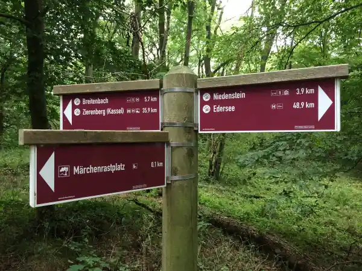
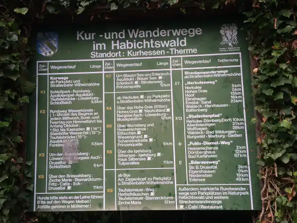

Start / Wandern
Aaron Schiele
geprüft am
geprüft am
Was ist der Habichtswaldsteig, und passt er für einen Tag ab Kassel?

Der Habichtswaldsteig ist ein 85 Kilometer langer Premiumwanderweg von Zierenberg bis zum Edersee. Den Fernweg gehst du in vier Tagesetappen von 18 bis knapp 24 Kilometern, markiert mit einem Habicht auf purpurnem Grund. Für einen Tag ab Kassel sind die Extratouren die bessere Wahl: zehn Rundtouren zwischen 10 und gut 18 Kilometern, alle als Premium-Wanderweg ausgezeichnet. Zwei davon, H3 und H10, führen an Herkules und Bergpark vorbei.
Du willst den Fernweg selbst gehen? Kassel-Neuholland, eine Haltestelle von Bus 22, ist ein Etappenort. Von dort bringt dich Bus 22 zum Druseltal und die Tram 4 zum Bahnhof Wilhelmshöhe.
Welche Touren starten am Bergpark, und wie lang sind sie?

Die Zeiten stammen aus den Tourenbeschreibungen, mit Pausen und Aussicht planst du mehr ein.
| Tour | Länge | Dauer | Start | Rückweg |
|---|---|---|---|---|
| Kleine Hohes-Gras-Runde | 2,05 km | eine Dreiviertelstunde | Haltestelle Hohes Gras | Bus 22 zum Druseltal, dann Tram 4 |
| Löwenburgrunde | 3,24 km | 1 Stunde | Wanderparkplatz Asch/Augustinum | Bus 22 ab Am Steinbruch oder Tram 4 ab Druseltal |
| H3 „Im Glanz des Herkules“ | 12 km | 4 Stunden | Wanderparkplatz Herkules | Bus 22 zum Druseltal, dann Tram 4 |
| H10 „Über den Dächern der Stadt“ | gut 18 km | etwa 6 Stunden | Herkules, Hohes Gras oder Druseltal | Bus 22 und Tram 4, die Runde lässt sich unterwegs abkürzen |
Welche Tour passt für Familien mit Kindern?
Die Kleine Hohes-Gras-Runde ist mit 2,05 Kilometern die kürzeste Tour und als leicht eingestuft. Sie liegt am Hohen Gras, mit knapp 615 Metern der höchste Punkt im Naturpark Habichtswald. Rund 50 Höhenmeter gehst du am Waldrand entlang, mit ein paar steileren Stücken und Blick auf eine beweidete Waldwiese. Am Start warten ein Aussichtsturm, eine Waldgaststätte und ein Kletterwald, die Pause ist also gleich mit eingeplant.
Wegzeichen ist eine gelbe 9 im gelben Kreis. Der Weg kreuzt ein Mountainbike-Gebiet mit Strecke und Trailpark, nimm Kinder dort an die Hand. Mit dem Bus fährst du ab Herkules über Essigberg zum Hohen Gras, von der Haltestelle sind es noch etwa 500 Meter bis zum Start. Nicht jede Fahrt des Bus 22 hält am Hohen Gras, schau also vorher in den Fahrplan.
Wie lange dauert die Löwenburgrunde?
Die Löwenburgrunde ist 3,24 Kilometer lang und dauert eine Stunde. Sie startet am Wanderparkplatz Asch/Augustinum und führt über einen Forstweg in den südlichen Bergpark, an der Löwenburg vorbei und bergauf zum Asch. Der Asch ist ein künstlich angelegter Waldsee, der einmal als Wasserreservoir für die Wasserspiele gedacht war. Die Runde ist als mittel eingestuft, rund 100 Höhenmeter kommen zusammen. Gesucht wird das Wegzeichen „NP Rundweg 17“.
Zum Start kommst du mit Bus 22 bis Am Steinbruch oder mit der Tram 4 bis zur Endhaltestelle Druseltal. Wer mehr will, hängt den Rundweg 15 an: rund 4 Kilometer vom Asch hinauf zum Herkules. Eine Einkehr ist auf der Runde nicht ausgewiesen, nimm etwas zu trinken mit.
Wie anspruchsvoll ist die 12-Kilometer-Runde H3 am Herkules?
„Im Glanz des Herkules“ ist mit 12 Kilometern und rund 300 Höhenmetern eine leichte Tagestour von etwa 4 Stunden. Sie verläuft auf einer Hochfläche meist über 500 Metern Höhe durch Buchenwälder, über Waldwiesen und alte Huteweiden. Zu sehen gibt es unter anderem den Silbersee, den Waldsee Höllchen mit Kneippanlage, den Essigbergturm und den Turm am Hohen Gras.
Starten kannst du am Wanderparkplatz Herkules, am Hohen Gras, am Essigberg oder am Roten Stollen. Du folgst dem Wegzeichen mit der Tourbezeichnung H3. Einkehren kannst du in der Waldgaststätte Hohes Gras, in den Herkules-Terrassen oder im Waldhotel Elfbuchen.
Wie schwer ist die 18-Kilometer-Runde H10 über den Dächern der Stadt?
Die H10 ist mit gut 18 Kilometern und rund 440 Höhenmetern die einzige schwere Extratour und eher etwas für einen langen Tag. Sie führt vom Hohen Gras zum Sichelbachbecken und zum Oktogon am Herkules, weiter über Neu Holland und den Asch ins Druseltal, am Naturschutzgebiet Dönche entlang auf den Brasselsberg und zur Teufelsmauer, einer Basaltwand mitten im Wald. Durch die Firnsbachklamm geht es zurück zum Hohen Gras. Du folgst dem H10-Logo.
Weil Herkules und Druseltal ebenfalls Einstiegspunkte sind, kannst du die Runde in zwei Etappen teilen oder an einer der Haltestellen abkürzen. Einkehr gibt es in der Waldgaststätte Hohes Gras, in den Herkules-Terrassen, im Herbsthäuschen am oberen Ende der Firnsbachklamm und im Landgasthaus Unteres Firnsbachtal. Bei Nässe ist der Bereich unter der Teufelsmauer rutschig, dann gehst du die Runde besser gegen den Uhrzeigersinn. Der Bismarckturm am Rand der Route wird saniert und ist derzeit nicht begehbar.
Wie komme ich zu den Startpunkten und wieder zurück?
Die Tram 4 fährt vom Bahnhof Wilhelmshöhe bis zur Endhaltestelle Druseltal, werktags bis 20 Uhr alle 15 Minuten. Dort steigst du in Bus 22 um, der halbstündlich zum Herkules fährt und von dort über Essigberg weiter zum Hohen Gras. Einzelne Fahrten fahren nur als Anrufsammeltaxi, anmelden musst du dich bis 15 Minuten vorher unter 0800-939-0800. Schau vor der Tour in die NVV-App, vor allem für die letzte Rückfahrt am Abend.
Mit dem Auto parkst du am Herkules, dort gibt es 280 Plätze und die Tagesgebühr beträgt 5 Euro, mehr dazu unter Parken am Bergpark. Die Naturpark-Wanderparkplätze Hohes Gras und Asch/Augustinum liegen näher an den Rundwegen. Festes Schuhwerk, wetterfeste Kleidung und genug zu trinken gehören bei allen Touren dazu.
Häufige Fragen
Wo beginnt und endet der Habichtswaldsteig?
Der Habichtswaldsteig beginnt in Zierenberg und endet nach 85 Kilometern am Edersee. Du kannst ihn in vier Tagesetappen gehen oder dir einzelne Extratouren als Rundwege heraussuchen.
Welche Rundwanderwege gibt es am Habichtswaldsteig?
Zum Habichtswaldsteig gehören zehn Extratouren von H1 bis H10, alle als Rundtouren, von 10 bis gut 18 Kilometern. Ab dem Bergpark erreichst du am leichtesten H3 mit 12 Kilometern und H10 mit gut 18 Kilometern.
Wie ist der Habichtswaldsteig markiert?
Der Fernweg trägt einen Habicht auf purpurnem Grund. Die Extratouren sind mit ihrer Nummer wie H3 oder H10 markiert, die Naturpark-Rundwege mit einer Zahl wie der gelben 9 an der Kleinen Hohes-Gras-Runde.
Welche Wanderung ab dem Bergpark geht ohne Auto?
Alle vier Touren erreichst du mit Tram 4 und Bus 22. Am einfachsten ist die Löwenburgrunde über die Haltestelle Am Steinbruch oder die Endhaltestelle Druseltal.
Gibt es einen Rundweg nur im Bergpark?
Ja, der Rundweg Wasserspiele K5 führt rund 5 Kilometer vom Besucherzentrum Wilhelmshöhe zum Fuß der Kaskaden und zurück. Du kommst mit der Tram 1 bis Wilhelmshöhe (Park) und folgst dem Wegzeichen K5. Wie du den Bergpark an einem Tag erlebst, steht auf der Seite zum Park.
Kann ich die Wanderung am Hohen Gras mit dem Kletterwald verbinden?
Ja, am Hohen Gras liegen Waldgaststätte, Aussichtsturm und Kletterwald nah beieinander. Der Kletterwald hat 2026 vom 4. April bis 1. November geöffnet, an Wochenenden, Feiertagen und Brückentagen, in den hessischen Schulferien täglich. Du meldest dich vorher an, ein Besuch dauert 2,5 Stunden mit Einweisung.
Wie weit ist es vom Herkules zum Hohen Gras?
Rund 3,4 Kilometer, zu Fuß etwa 48 Minuten reine Gehzeit, die Extratour H10 verbindet beide über das Sichelbachbecken. Wer abkürzen will, nimmt am Herkules den Bus 22.
Wann hat die Waldgaststätte Hohes Gras offen?
Laut Visit Kassel außer montags täglich von 11 bis 18 Uhr. Warme Küche gibt es dienstags bis freitags bis 16 Uhr, am Wochenende bis 17 Uhr. Ob im Winter andere Zeiten gelten, steht dort nicht.
Quellen abgerufen am 15.10.2026
- Naturpark Habichtswald Habichtswaldsteig · Habichtswaldsteig Leitweg und Etappen · Extratouren des Habichtswaldsteigs · Etappen mit dem ÖPNV von Kassel · Naturpark-Rundwege · Wanderparkplatz Hohes Gras
- Habichtswaldsteig Flyer Extratour H10 (PDF) · Flyer Extratour H3 (PDF)
- Visit Kassel Habichtswaldsteig Extratour H10 · Kleine Hohes-Gras-Runde · Terrainkurweg K5 Rundweg Wasserspiele · Waldgaststätte Hohes Gras
- Nordhessen erleben Löwenburgrunde
- KVG Kassel Fahrplan Linie 22 (2026)
- Stadt Kassel Anreise mit dem ÖPNV · Parken am Bergpark
- Kletterwald Kassel Öffnungszeiten
- OpenStreetMap-Routing Fußwege
Weiterlesen

Herkules Kassel
Herkules Kassel: Was das Monument ist, wann Oktogon und Plattform offen sind, was der Eintritt kostet und wie du mit Bus oder Auto hinaufkommst.
Weiterlesen
Löwenburg Kassel
Löwenburg Kassel: Öffnungszeiten im Sommer und Winter, warum du nur mit Führung hineinkommst, was Tickets kosten und wo du parkst.
Weiterlesen
Bergpark Wilhelmshöhe Kassel
Bergpark Wilhelmshöhe in Kassel: was dich im UNESCO-Welterbe erwartet, Eintritt (Park frei), ein Rundweg bergab für einen Tag und die Anreise.
Weiterlesen